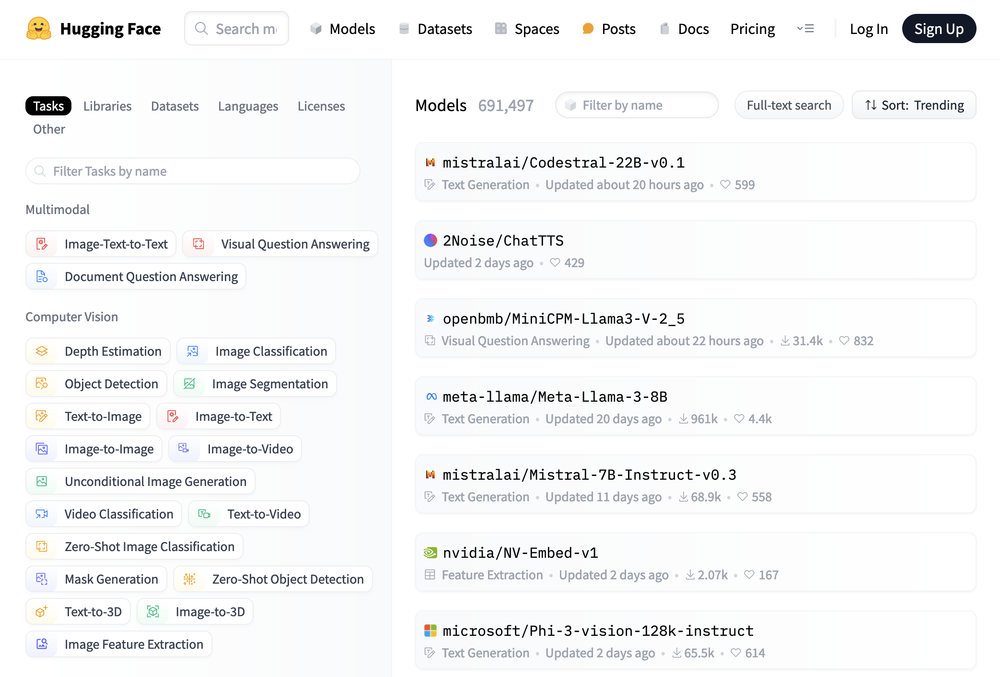

Produites par des sources et productrices de sources
une approche des intelligences artificielles génératives par les humanités et l’histoire numériques
Frédéric Clavert
, C2DH, Université du Luxembourg
AI4LAM / 3 juin 2024
histoire des relations internationales
histoire numérique
memory studies

Conclusion